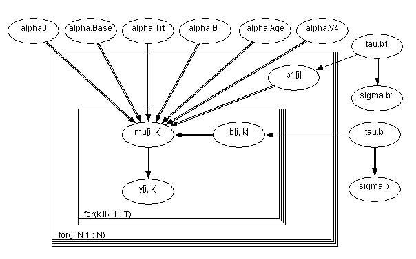
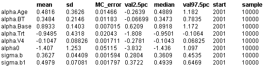

![[epil0]](epil0.bmp) Epilepsy: repeated measures on
Epilepsy: repeated measures on
Poisson counts
Breslow and Clayton (1993) analyse data initially provided by Thall and Vail (1990) concerning seizure counts in a randomised trial of anti-convulsant therpay in epilepsy. The table below shows the successive seizure counts for 59 patients. Covariates are treatment (0,1), 8-week baseline seizure counts, and age in years. The structure of this data is shown below
We consider model
III
of Breslow and Clayton (1993), in which Base is transformed to log(Base/4) and Age to log(Age), and a Treatment by log(Base/4) interaction is included. Also present are random effects for both individual subjects b
1
j
and also subject by visit random effects b
jk
to model extra-Poisson variability within subjects. V
4
is an indicator variable for the 4th visit.
y
jk
~ Poisson(
m
jk
)
log
m
jk
=
a
0
+
a
Base
log(Base
j
/ 4) +
a
Trt
Trt
j
+
a
BT
Trt
j
log(Base
j
/ 4) +
a
Age
Age
j
+
a
V4
V
4
+ b1
j
+ b
jk
b1
j
~ Normal(0,
t
b1
)
b
jk
~ Normal(0,
t
b
)
Coefficients and precisions are given independent "noninformative'' priors.
The graphical model is below

The model shown above leads to a Markov chain that is highly correlated with poor convergence properties. This can be overcome by standardizing each covariate about its mean to ensure approximate prior independence between the regression coefficients as show below:
BUGS
language for epil example model III with covariate centering
(centering interaction term BT about mean(BT)):
model
{
for(j in 1 : N) {
for(k in 1 : T) {
log(mu[j, k]) <- a0 + alpha.Base * (log.Base4[j] - log.Base4.bar)
+ alpha.Trt * (Trt[j] - Trt.bar)
+ alpha.BT * (BT[j] - BT.bar)
+ alpha.Age * (log.Age[j] - log.Age.bar)
+ alpha.V4 * (V4[k] - V4.bar)
+ b1[j] + b[j, k]
y[j, k] ~ dpois(mu[j, k])
b[j, k] ~ dnorm(0.0, tau.b); # subject*visit random effects
}
b1[j] ~ dnorm(0.0, tau.b1) # subject random effects
BT[j] <- Trt[j] * log.Base4[j] # interaction
log.Base4[j] <- log(Base[j] / 4) log.Age[j] <- log(Age[j])
}
# covariate means:
log.Age.bar <- mean(log.Age[])
Trt.bar <- mean(Trt[])
BT.bar <- mean(BT[])
log.Base4.bar <- mean(log.Base4[])
V4.bar <- mean(V4[])
# priors:
a0 ~ dnorm(0.0,1.0E-4)
alpha.Base ~ dnorm(0.0,1.0E-4)
alpha.Trt ~ dnorm(0.0,1.0E-4);
alpha.BT ~ dnorm(0.0,1.0E-4)
alpha.Age ~ dnorm(0.0,1.0E-4)
alpha.V4 ~ dnorm(0.0,1.0E-4)
tau.b1 ~ dgamma(1.0E-3,1.0E-3); sigma.b1 <- 1.0 / sqrt(tau.b1)
tau.b ~ dgamma(1.0E-3,1.0E-3); sigma.b <- 1.0/ sqrt(tau.b)
# re-calculate intercept on original scale:
alpha0 <- a0 - alpha.Base * log.Base4.bar - alpha.Trt * Trt.bar
- alpha.BT * BT.bar - alpha.Age * log.Age.bar - alpha.V4 * V4.bar
}
Data
( click to open )
Inits for chain 1
Inits for chain 2
( click to open )
Results
A burn in of 5000 updates followed by a further 10000 updates gave the following parameter estimates

These estimates can be compared with those of Breslow and Clayton (1993) who reported
a
0
= -1.27 +/- 1.2,
a
Base
= 0.86 +/- 0.13,
a
Trt
= -0.93 +/- 0.40,
a
BT
= 0.34 +/- 0.21,
a
Age
= 0.47 +/- 0.35,
a
V4
= -0.10 +/- 0.90
s
b1
= 0.48 +/- 0.06
s
b
= 0.36+/0.04.